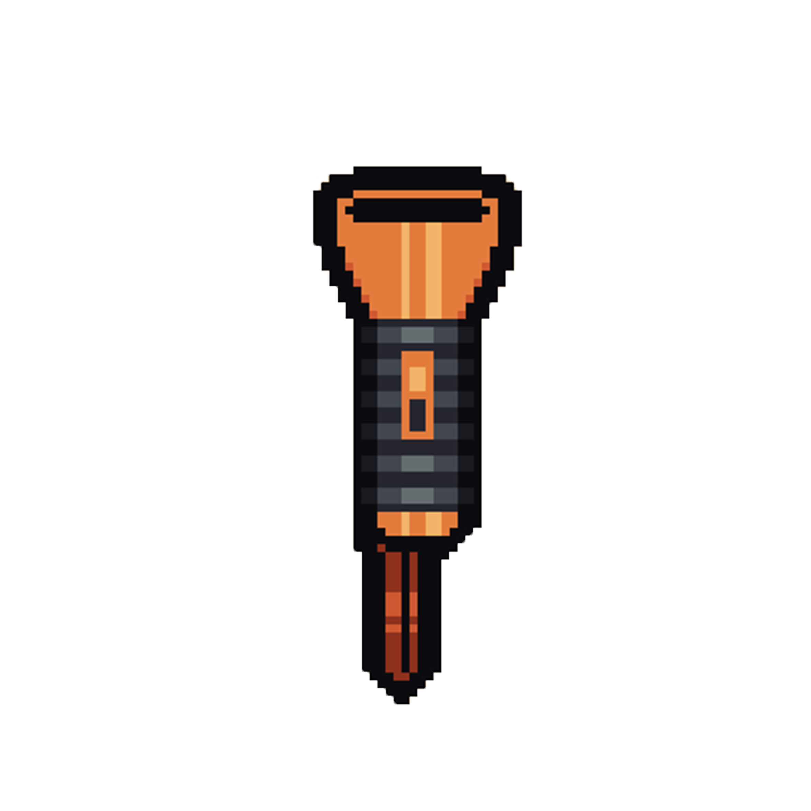

You enter the forest and you start searching around the place. You look under the rocks, behind trees and through a couple of bushes until you find a flashlight in one of the bushes. Lucky for you there's a cave close. You can use the flashlight there.
